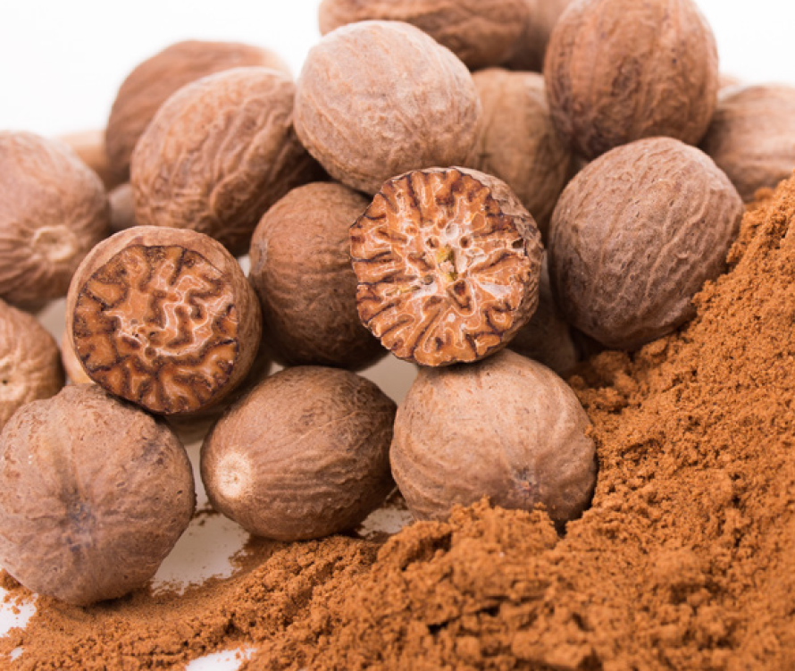

CEYLON CINNAMON

CeylonBLACK PRPPER

CEYLON GARCINIA

CEYLON Nut Meg

Ceylon Cardamon

This is the official Thaprobane organic Spices webpage.This is proudly pesent by "ELA-PARA(PVT)LTD" Mainly We target from this web page we hope to introduce Important and Specally of our Organic Spices.
Some of them are :
1.We are established as a new company. There are many scame sites on the internet. You can't trust them if they try to cheat and take your money. But if you place your order from Ebay or Amazon you can get a 100% money back guarantee. 2. You can place Your feedback.(It is very Important for our Company's future.) 3. Ebay,Amazon and Payoneer 100% trustable web for the online pay . 4.If we are Ebay and amazon sellers Our Ebay and Amazon Stores are in High Quality.
OUR STORY
Nature Spices was incorporated in 1999 with a view of supplying high quality spices to local consumers. From day one, we focused on quality, grate taste and smell without adding any preservatives or additives. We were one of the first companies to offer spices in multi-colour printed, food grade bags. Our high quality product is a result of careful planning and executing of GMP certified process at our purpose build factory. We believe in high quality raw material producing highest quality output.
Why we are totally different from other spice business companies?
When compared with the thaprobane and other spices business companies, most of the other companies are used to take the spices from different growers or external dealers. But we aren’t taking any single raw material from the outside parties.
We cultivate Spices crops using organic method in our own farm.. If You Have any Doubt about Our Spices Manufacturer You can visit Our Official Youtube channel and watch them and remove your Doubt. In those videos we include from the pick our Harvest to finish packing. If you need t o contact us freely and privately use Following links and numbers. As soon as possible we hope to Give a way to Access to cctv in our Factory. After this You Can See in live our manufacturing Process.


Sri lanka, the most beautiful and nourished country in southern Asia comforted with tropical monsoon climate gives the best spices to the world. The "Thaprobane Organic Spices" are located on rural village called "Morawaka" in "Matara" district bound to the "Sinharaja rain forest".